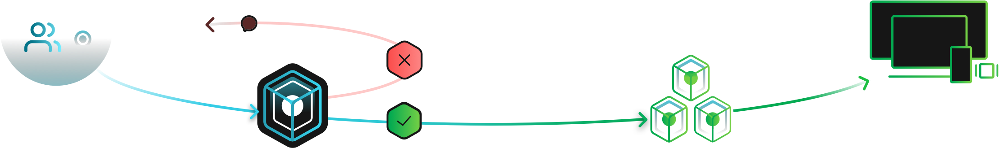

性能、柔軟性、制御性を兼ね備えた
CI ツール
CircleCI による開発プロセスの高速化で、より多様な構成も可能になります。
CircleCI を導入するメリット
VCS との連携
CircleCI を GitHub、GitHub Enterprise、Bitbucket と連携させると、コードがコミットされるたびに CircleCI でビルドを実施できるようになります。
テストの自動化
CircleCI はクリーンなコンテナまたは仮想マシンでビルドを自動実行するため、コミットごとにテストを行えます。
通知
ビルドが失敗すると通知が届くため、すぐに問題を修正できます。
デプロイの自動化
ビルドに成功した後は、さまざまな環境にデプロイされるので、リリースまでの時間を短縮できます。
パフォーマンスの向上
コードのビルド、テスト、デプロイには、スピードと信頼性が必要です。最高のパフォーマンスを得られるリソースをお選びください。
完全な制御
ワークフローによってジョブのオーケストレーションをカスタマイズし、最適な方法でソフトウェアをビルドできます。
卓越した柔軟性
Linux で利用できる言語は CircleCI でも利用できます。Docker を徹底的にサポートしているため、自由に環境を構成できます。
貴社開発チームに必要なすべての機能を提供
ワークフローによるジョブの自律制御
ビルド、テスト、デプロイといったジョブの実行方法を定義して、オーケストレーションを行うことで、複数のサポート対象の構成を組み合わせた開発プロセスを完全に制御できます。ワークフローを使用してジョブ実行のスケジュールを指定する方法については、こちらをご覧ください。
Docker のフル サポート
Docker のパブリック レジストリやプライベート レジストリ、または他の一般的なレジストリに登録されているイメージをジョブ単位でカスタマイズして実行できます。Docker イメージのビルド、Docker レイヤー キャッシュへのアクセス、作成などが行えるほか、ビルド済みの CircleCI Docker イメージを使用することも可能です。
必要な CPU/RAM を自由に選択
特定のビルドについて、チームのニーズに最適なリソース (CPU/メモリ) を簡単に構成できます。アカウントで構成可能なリソースを有効化する方法については、こちらをご覧ください。
強力なキャッシュ
イメージ、ソース コード、依存関係、カスタム キャッシュといった多彩なキャッシュ オプションによってビルドを高速化できます。パフォーマンスを最適化するために、ジョブ全体にキャッシュの保存および復元ポイントを設定できます。
プロビジョニング不要
CircleCI では本番環境に合わせて実行環境をカスタマイズできます。Docker イメージも、Linux や Windows や macOS の仮想マシンも利用可能です。Web サイト、マルチプラットフォームのモバイル アプリ、システム ソフトウェアなど、何を構築するときでも、カスタマイズ性の高いクリーンなビルド環境をジョブごとに用意して実行できます。
クラウドとオンプレミスから選択可能
CircleCI はクラウド マネージド サービスとして提供されています。また、お客様のプライベート インフラストラクチャのファイアウォール内で CircleCI を実行していただくことも可能です。
クラウド
セットアップ、セキュリティ対策、メンテナンスなど、お客様の継続的インテグレーションの管理は CircleCI が行います。
リリースされた機能にすぐにアクセスでき、自動的にアップグレードも行われるため、メンテナンスの負担が軽減されます。
GitHub または Bitbucket のアカウント認証から、登録、ビルドの成功まで、ほんの数分で完了できます。
サーバー
CircleCI をお客様のプライベート サーバーにインストールします。セットアップやセキュリティ対策はお客様ご自身で行うことになります。
すべての権限を持つシステム管理者が制御を行うため、完全なカスタマイズが可能です。
更新のタイミングは、メンテナンスのスケジュールに合わせて決定できます。
ツールチェーンと接続
CircleCI は、GitHub、Bitbucket、fastlane、Azure、Slack など、お客様がご使用中のサービスと接続することができます。

「CircleCIがビルドやデプロイなどのプロセスを安全かつ効率的に代行してくれるおかげで、我々はプロダクト開発に専念することができます。開発効率、プロダクトの品質を共に高めてくれるパートナーのような存在です。」
大槻友諒
Line、Frontend Engineer
「CIはプロダクトを作るために欠かせないツールです。CircleCI は容易に導入でき、高い信頼性でチームの開発生産性を高めてくれました。テストやコード解析、ビルドなど様々な場面で利用しています。」
鈴木祥真
メルカリ、Software Engineer in Test